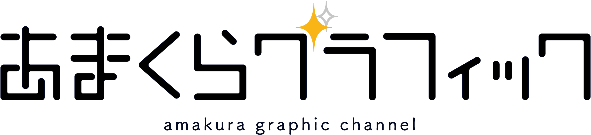

天倉りい / Amakura Rili
Illust × Live2D × Vtuber
「美術部で遊び足りない！」 完全セルフ受肉 × 個人勢 新人Vtuber12月28日
ママ担当：
@RiriyStrawberry
,
@Someha_Uho
✦HP, 担当Vtuber & Live2Dモデリング（ママのみ）ご依頼
https://x.gd/RLyqS
NEWS
2025/09/07
WEBサイト公開